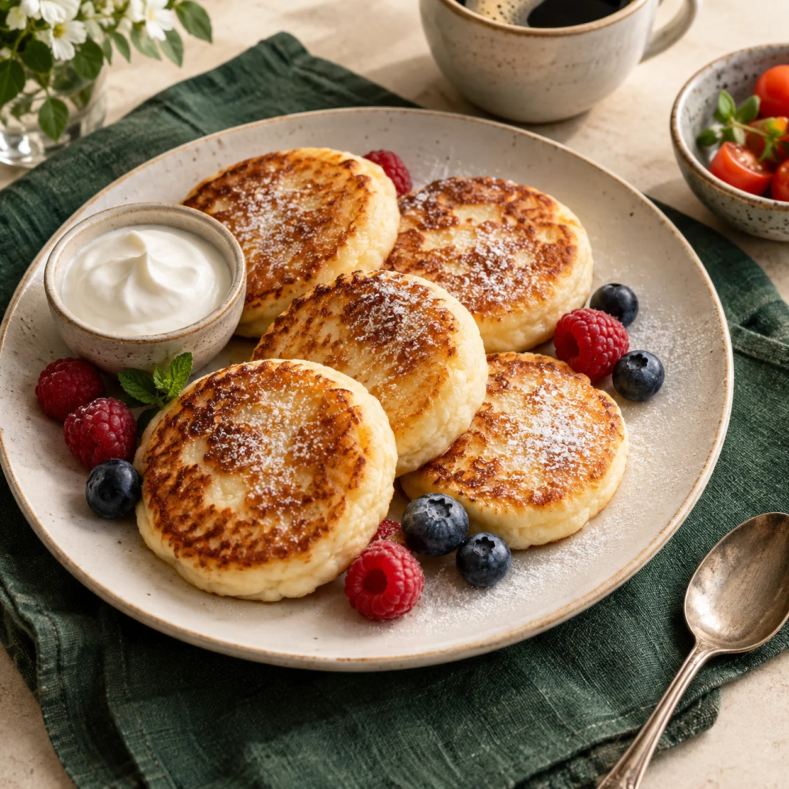

Рецепт із Reels чи TikTok — текстом і зі списком покупок.
PlateLoop — бот у Telegram. Надішли йому посилання на кулінарне відео з Instagram чи TikTok — отримаєш інгредієнти з кількостями, кроки приготування і готовий список покупок.
Безкоштовно, без реєстрації й нової апки. Зараз бета — буду вдячний за чесний фідбек.

instagram.com/reel/…↗
Як це працює
-
01instagram.com/reel/… ↗ReelsTikTok
Надішли посилання
Скопіюй посилання на відео з Reels чи TikTok і надішли боту звичайним повідомленням.
-
02
📖 Сирники (не збережено)
⏱ 25 хв · 2 порц. · 🧾 7 · 📝 4
зроби на 4 порціїПеревір рецепт
Інгредієнти, кількості, кроки. Якщо щось не так — виправ звичайним повідомленням.
-
03
📖 Сирники · ⏱ 25 хв · 2 порц.
• Кисломолочний сир — 400 г
🍽 Записати🛒 У покупкиЗбережи й забери список покупок
Рецепт лишається у твоїх рецептах, а інгредієнти одним натиском ідуть у список покупок.
Що саме отримаєш
Приклад: одне відео із сирниками — від посилання до списку покупок.
Рецепт текстом, а не в паузах відео.
Бот спершу покаже чернетку: назву, час, порції, інгредієнти з кількостями й кроки. Перевір, за потреби виправ повідомленням і натисни «✅ Зберегти». Збережений рецепт виглядає так.
Список покупок з того самого рецепта.
Натисни «🛒 У покупки» на збереженому рецепті — інгредієнти з кількостями стануть кнопками списку. У магазині просто позначай куплене.
instagram.com/reel/…
↗ відео із сирниками
📖 Сирники · ⏱ 25 хв · 2 порц.
• Кисломолочний сир — 400 г
• Яйце — 1 шт
• Борошно — 3 ст. л.
• Цукор — 1 ст. л.
• Сіль — дрібка
• Олія — 2 ст. л.
• Сметана — 100 г
1. Розімни сир, додай яйце, цукор і сіль.
2. Всип борошно й замісь м’яке тісто.
3. Сформуй сирники й обваляй у борошні.
4. Обсмаж на олії по 3–4 хв з кожного боку.
🛒 Покупки · лишилось 7
Напиши товари через кому.
Ще бот уміє
Щоденник калорій — фото, голосом чи текстом
Запиши, що їси.
Фото тарілки, голосове чи текст — обирай. Бот оцінить калорії та БЖВ. Перевір порції й підтверди запис: він залишиться у щоденнику та підсумку дня.
Готуєш за збереженим рецептом? Натисни «🍽 Записати», перевір порцію й підтверди запис.
На обід борщ і хліб
🍽 Страва (не записано)
• борщ — 400 г · 320 ккал
• хліб житній — 40 г · 100 ккал
Разом ≈ 420 ккал · Б 18 / Ж 14 / В 52
Чому Telegram
- Без нового застосункуБот живе в Telegram, який уже є.
- Текст, фото чи голосЯк тобі зручніше в цю хвилину.
- Усе в одному чатіРецепти, покупки й щоденник.
Від автора
Привіт! Якщо ти дочитуєш аж сюди, то я вже дуже радий.
Ідея PlateLoop насправді дуже проста. Я постійно думаю про те, що їсти, як це планувати і як не забувати рахувати калорії (як і багато хто з нас). Але я дуже не люблю скачувати нові додатки, розбиратись у них, а потім просто забувати вносити туди дані. Тому я вирішив зробити бота в Telegram, щоб мати все в одному місці і завжди під рукою. У місці, куди й так заходжу по сто разів на день.
Зараз бета: я активно все це докручую, тому якщо вирішиш спробувати — буду дуже вдячний за фідбек. Що сподобалось, що дратує, чого не вистачає — пиши командою /feedback у боті. Я все читаю 🙌
Кілька відповідей
перед початком.
Чи потрібен окремий застосунок?
Ні. Достатньо Telegram: окремий застосунок PlateLoop ставити не треба. Відкрий бота й почни розмову українською або англійською.
З яких платформ можна надіслати відео?
З Instagram (Reels) і TikTok. Надсилай саме посилання — відеофайл бот не прочитає.
Що робити, якщо в рецепті помилка або бракує кількостей?
Перед збереженням бот показує чернетку рецепта. Напиши в чаті, що змінити, — наприклад, «додай 2 яйця» чи «зроби на 4 порції», — і бот оновить рецепт. Коли все правильно, натисни «✅ Зберегти».
Чи треба реєструватися і що бот про мене зберігає?
Реєстрації немає: ні email, ні телефону, ні анкети — достатньо Telegram. Бот зберігає те, що ти надсилаєш: рецепти, записи про їжу, списки покупок. Текст про страви, фото й голос можуть передаватися провайдеру ШІ для обробки; фото бот не зберігає. Видалити свої дані можна командою /delete_me (відгуки про продукт зберігаються для аналізу).
Скільки це коштує?
Зараз бот безкоштовний: триває бета, і мені важливіший твій фідбек.
Як користуватися списком покупок?
Інгредієнти збереженого рецепта додає в список кнопка «🛒 У покупки», а інші товари допиши через кому. Відкрий список у магазині й позначай куплене — усе в тому самому чаті Telegram.
Як подивитися записи й підсумок дня?
Натисни «Сьогодні» у боті — там підсумок дня з підтверджених записів: страви, калорії та поживні речовини.
Наскільки точний підрахунок калорій?
Оцінки приблизні. Перевір продукти й порції та за потреби уточни їх перед збереженням. PlateLoop не надає медичних або дієтологічних рекомендацій.
Що означає бета і де залишити відгук?
PlateLoop зараз у беті й ще вдосконалюється. Спробуй бота для своєї задачі й розкажи, що зручно, а чого бракує, — командою /feedback у боті.
Почни з одного відео.
Надішли боту посилання на рецепт, який давно хочеш приготувати.
Відкрити в Telegram